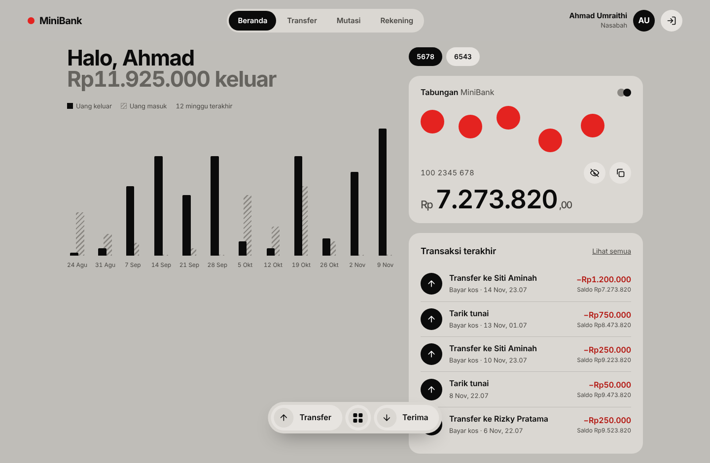
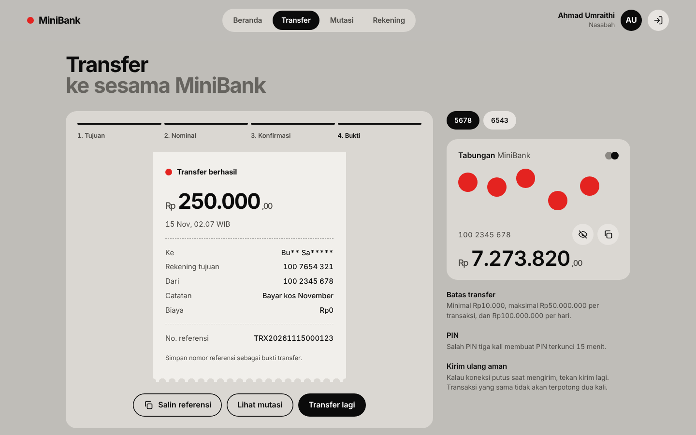

Pembukuan berpasangan
Setiap transaksi menulis satu debit dan satu kredit dengan jumlah sama. Total debit dan kredit di buku besar selalu seimbang, dan teller bisa mengeceknya kapan saja.
MiniBank adalah backend core banking yang saya bangun dengan Java Spring Boot dan PostgreSQL. Nasabah bisa buka rekening, transfer pakai PIN, dan melihat mutasi. Teller bisa setor, tarik, membekukan rekening, dan mengecek apakah buku besar masih seimbang.
Server demo tidur kalau tidak dipakai. Kunjungan pertama butuh sekitar satu menit untuk membangunkannya.
Setiap transaksi menulis satu debit dan satu kredit dengan jumlah sama. Total debit dan kredit di buku besar selalu seimbang, dan teller bisa mengeceknya kapan saja.
Setiap permintaan transfer membawa Idempotency-Key. Tombol kirim yang terpencet dua kali, atau koneksi yang putus lalu dikirim ulang, tetap jadi satu transaksi.
Rekening dikunci dengan urutan tetap selama transfer, sehingga ratusan transfer di detik yang sama tidak membuat saldo minus atau saling menunggu selamanya.
Salah PIN tiga kali membuat PIN terkunci 15 menit. Login yang gagal berulang kali juga dibatasi.
Daftar, login, transfer, PIN salah, sampai pembekuan rekening tercatat lengkap dengan waktu dan alamat IP.
Test integrasi berjalan di PostgreSQL asli lewat Testcontainers, termasuk test transfer bersamaan. GitHub Actions menjalankan semuanya di setiap pull request.
Ini isi buku besar dari demo online setelah dua setoran tunai dan satu transfer. Rekening kas bank memang bernilai minus: artinya bank sedang memegang uang tunai yang sudah dititipkan ke rekening nasabah.

